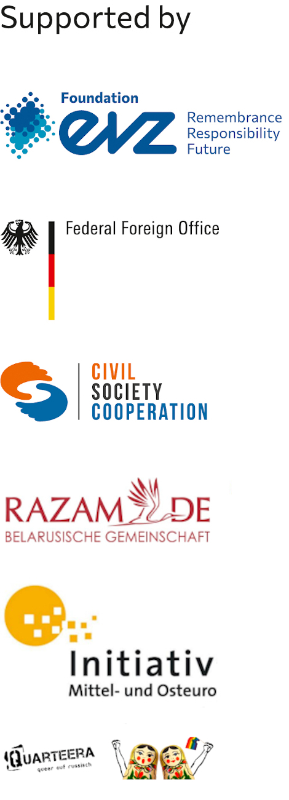
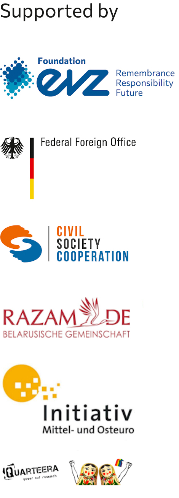

Karl-Liebknecht-Str. 8,
10178 Berlin
DIENST
Stargarder Str. 77,
10437 Berlin
Otto-Braun-Str. 70–72 Sek. C,
10178 Berlin
Wir sind eine Gruppe von LGBTQ+ Leuten aus Belarus und solidarisch mit der belarussischen Protestbewegung. Viele von uns leben in Berlin, weil wir unsere Heimat aus politischen Gründen verlassen mussten. Jetzt machen wir das, was wir zusammen machen können, damit das Konzept der Freiheit bei der heimischen Revolutionsbewegung sich verstärkt.
Am 06. November organisieren wir eine Veranstaltung, die aus drei Teilen besteht:
Ein Gottesdienst, eine Demonstration und ein Konzert.
Zusammen mit der belarussischen Gemeinschaft “RAZAM e.V” , der russischsprachigen LGBTQ+ Organisation "Quarteera e.V" und der "Initiative Mittel- und Osteuropa e.V." organisieren wir einen offenen politischen Queer Gottesdienst in der Gethsemanekirche im Prenzlauer Berg (Stargarder Str. 77, 10437 Berlin).
Nach dem Gottesdienst gibt es einen politischen Demonstrationszug für Solidarität und Freiheit beginnend bei der Kirche hinzu dem Konzertort am Haus der Statistik (Otto-Braun-Str.70-72 Sektor C, 10178 Berlin).
Um 16:00 Uhr beginnt das Konzert. Musik, Ausstellungen, Video, Performance, Tanz und Netzwerk bis Mitternacht.
Weitere Informationen:
Telegram: #BLRQueerGDR
Facebook: Belarus Queer Gottesdienst-Demo-Konzert
Мы живём в Берлине и солидарны с протестным движением. Многие из нас были вынуждены покинуть Беларусь по политическим причинам. Сейчас мы делаем то, что в наших силах, чтобы помочь беларускому движению за свободу.
6 ноября мы организуем мероприятие, состоящее из трех частей: церковная квир-служба, демонстрация и концерт.
Вместе с беларуским сообществом "RAZAM e.V.", русскоязычной ЛГБТК+ организацией "Quarteera e.V." и "Initiative Mittel- und Osteuropa e.V." мы организуем открытую (можно всем) службу в Gethsemanekirche в Пренцлауэр Берг (Stargarder Str. 77, 10437 Berlin). Во время этого политического молебна выступят участницы и участники квир-протестов в Минске.
После службы состоится демонстрация-марш за солидарность и свободу в Беларуси, которая начнётся у церкви и пройдёт вплоть до места проведения концерта в Доме статистики (Haus der Statistic, Otto-Braun-Str.70-72 Sector C, 10178 Berlin).
Начало концерта в 16:00.
Музыка, видеоарт, танцы, выставки, перформансы, общение до полуночи!
Наша цель - обьединить разных людей, чтобы радоваться жизни и помогать друг другу в этом.
До встречи 6 ноября!
Дополнительная информация:
Telegram: #BLRQueerGDR
Facebook: Belarus Queer Gottesdienst-Demo-Konzert
We are a group of LGBTQ+ people from Belarus, their relatives and friends who are in solidarity with the Belarusian protest movement. Many of us live in Berlin because we had to leave our country for political reasons.
On November 6th we are organizing an event that consists of three parts:
A church service, a demonstration and a concert.
Together with the Belarusian community “RAZAM e.V”, the Russian-speaking LGBTQ + organization “Quarteera e.V” and the “Initiative Mittel- und Osteuropa e.V.” we organize an open political queer service in the Gethsemane Church in Prenzlauer Berg (Stargarder Str. 77, 10437 Berlin).
After the service a political demonstration for solidarity and freedom will start at the church. We will go the way to the concert location at the House of Statistics (Otto-Braun-Str. 70-72, Sector C, 10178 Berlin).
The concert starts at 4 p.m.
Music, exhibitions, video, performance, dance and networking until the midnight.
More info:
Telegram: #BLRQueerGDR
Facebook: Belarus Queer Gottesdienst-Demo-Konzert
 
